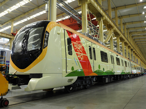

Nagpur is very famous for oranges .
Nagpur is also famous for Tari Poha.
Nagpur is located at the exact centre of the Indian subcontinent, close to the geometric center of the quadrilateral connecting the four major metros of India, viz. Chennai, Mumbai, New Delhi and Kolkata. The city has the Zero Mile Stone locating the geographical centre of India, which was used by the British to measure all distances within the Indian subcontinent.
|  |
Nagpur Metro is a rapid transit system for the city of Nagpur, Maharashtra, India. It is estimated to cost ₹8,650 crore (equivalent to ₹120 billion or US$1.5 billion in 2020).In February 2014, the Government of Maharashtra gave approval for the Metro Project, while the Government of India's Ministry of Urban Development had given "In Principle" approval for the Project. For more details click here |
| Administration Officials | Designation | Contact Details |
|---|---|---|
| Dr. Vipin Itankar IAS | Collector And District Magistrate | 07122564973 |
| Smt Vijaya Bankar (Add. Charge) | Additional Collector | 0712-2565130 |
| Shri Piyush Chiwande | Deputy Collector (Revenue) | 0712-2565049 |